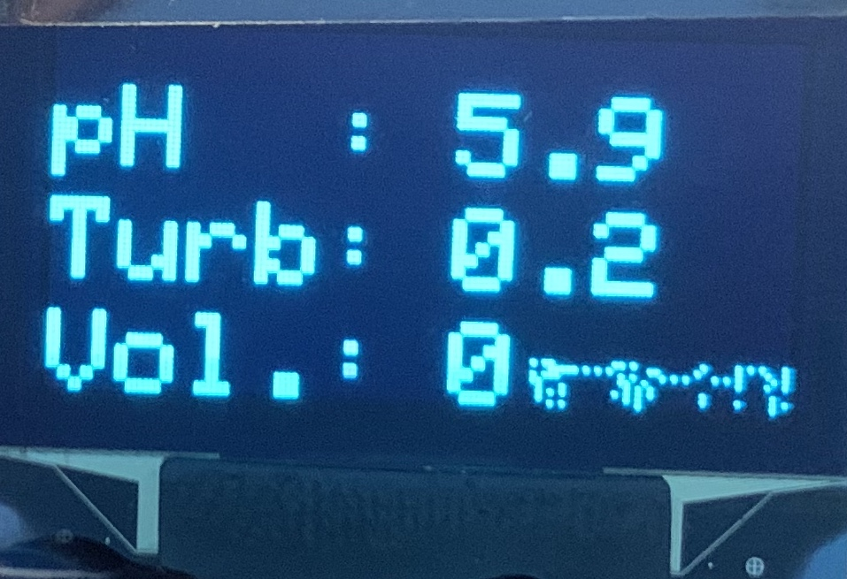
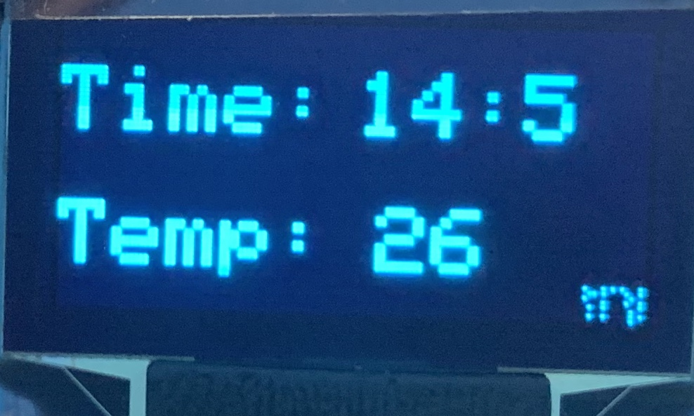
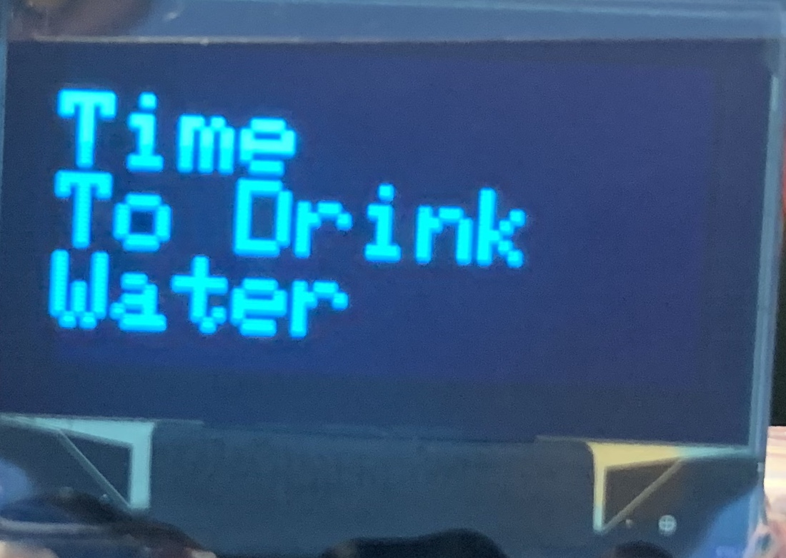

We used a pH sensor to test the acidity of the water. Lower pH is often an indicator of water that is not potable.
This sensor was used to measure the turbidity of water in ntu. Turbidity of water is a measure of the haziness caused by large number of invisible particles and is a key test of water quality.
The ultrasonic sensor was fixed to the lid of the bottle and used to measure the water level which in turn was used to calculate the volume of water left in the bottle.
A real time clock module was used for time keeping as well as to measure the temperature outside. We used the RTC to measure the time and calculated a linear function of time(depending on temperature outside) that sets the alert in action in regular intervals. For example, at higher temperatures during the day, the alerts are more frequent compared to colder temperatures.
 